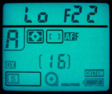
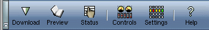
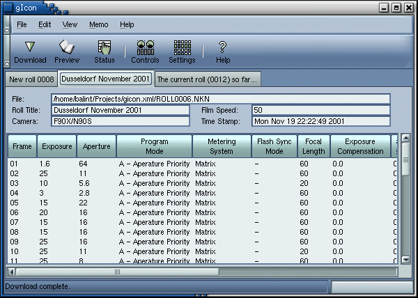
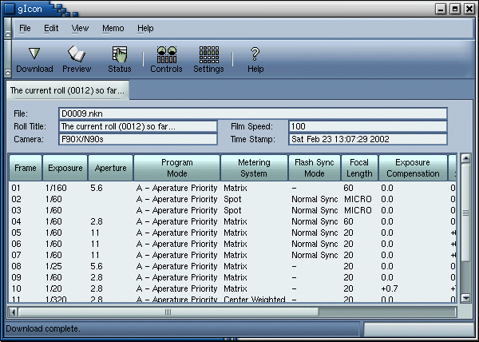

|
Main
Get ConnectedConnect the camera to your computer via an MC-31 or MC-33 data link cable. In case you wish to make your own cable, modifying an MC-30 remote release you can find the schematics on Ken Hancock's home page.Turn on the camera and start gIcon on you computer. In the Properties dialog select the appropiate serial line, and save the settings choosing OK. Now that the camera is connected and gIcon knows which serial line to talk to, you should attempt to display the Settings window, via the toolbar or by selecting the related menu item. If the connection has been established you should see the progress, on the Settings window, as it updates the attributes in the window. In the mean time the camera should indicate that it is talking to your computer by blinking the Organizer icon, on the camera's LCD.  As you apply any setting the inscription will appear on the camera's LCD, and stay there. You can remove all custom settings by pressing and holding down the green buttons of your camera until the inscription starts blinking. The data link cable is powered via the 10 pin remote terminal. It is wise to disconnect the datalink cable while it is not in use. Menus
File FormatsgIcon supports the following file formats:
ToolbarThe main toolbar features some of the menu functions. They are:
DownloadBy pressing the Download button on the toolbar or selecting the right menu item, gIcon will download all the rolls stored in the camera and create a separate notebook page for each roll. These rolls are not saved, however a unique file name is assigned to each of them. You can save the rolls by selecting the Save All menu command. You can change the file names by saving the rolls with the Save As command, however you will have to repeat this process for each of the downloaded rolls. Each roll has an editable Roll Title, and each frame has a caption. The following screenshot presents how to modify a caption.
Select the desired roll by selecting the related notebook page. Select a frame within the roll, by clicking on the frame's row. The current frame's caption appears in the caption editor. You can now modify the caption which will be updated as you type. PreviewThis feature is similar to the Download. It will download the current roll's shooting data only. This way you can track back settings used on a previous frames, within the current roll. DeleteNormally the downloaded data should be automatically removed from the camera, but what if a failure occurs while you save it? To avoid loss of data you have to remove the shooting data from your camera manually, selecting the Delete menu item in the Memo menu. If you have removed the shooting data accidentally, it is possible to undo the deletion, however this feature is not supported by gIcon. In this unlikely case contact me, to get some instructions.
I could not test the downloader's behavior when the memo holder's ring buffer wraps around. If you download suspicious data from your camera, that means that there is a bug in the downloader. In this case do not remove the data from your camera, but contact me. I still have to shoot 15 rolls in order to get to that point when my camera's buffer wraps around. Than I will repeat my test cases and if I find any misbehavior I will prepare a new release.
|